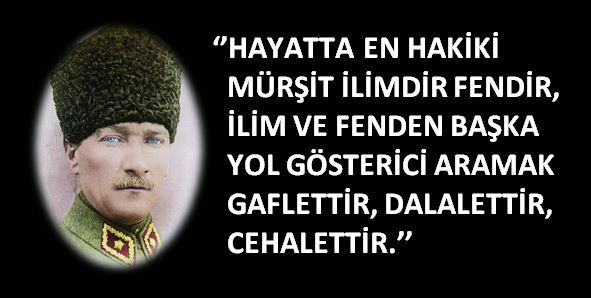
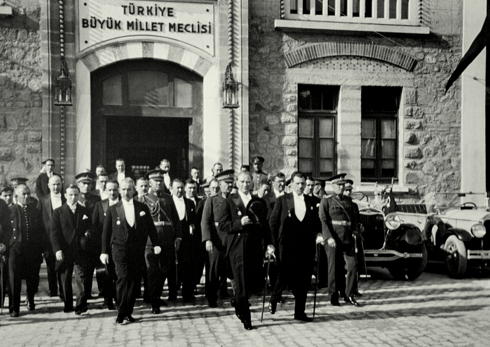
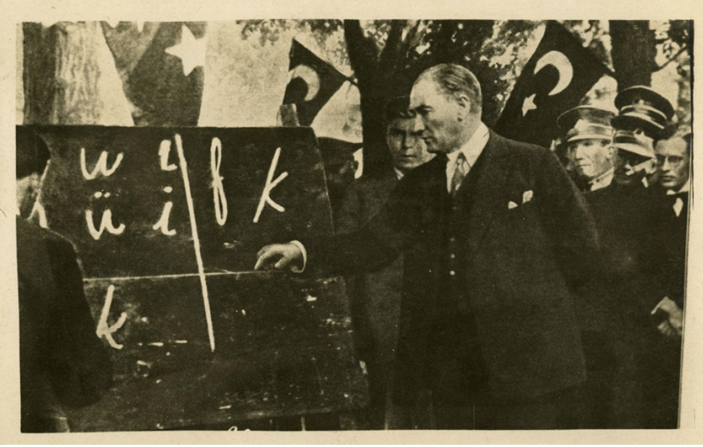

REFORMS
Atatürk was a military genius, a charismatic leader, also a comprehensive reformer in his life. It was important at the time for the Republic of Turkey to be modernized in order to progress towards the level of contemporary civilizations and to be an active member of the culturally developed communities. Mustafa Kemal modernized the life of his country.Atatürk introduced reforms which he considered of vital importance for the salvation and survival of his people between 1924-1938. These reforms were enthusiastically welcomed by the Turkish people.
Chronology of Reforms
- 1922 Sultanate abolished (November 1)
- 1923 Treaty of Lausanne secured (July 24). Republic of Turkey with capital at Ankara proclaimed (October 29)
- 1924 Caliphate abolished (March 3). Traditional religious schools closed, Sheriat (Islamic Law) abolished. Constitution adopted (April 20)
- 1925 Dervish brotherhoods abolished. Fez outlawed by the Hat Law (November 25). Veiling of women discouraged; Western clothing for men and women encouraged. Western (Gregorian) calendar adopted instead of Islamic calendar.
- 1926 New civil, commercial, and penal codes based on European models adopted. New civil code ended Islamic polygamy and divorce by renunciation and introduced civil marriage. Millet system ended.
- 1927 First systematic census.
- 1928 New Turkish alphabet (modified Latin form) adopted. State declared secular (April 10); constitutional provision establishing Islam as official religion deleted.
- 1933 Islamic call to worship and public readings of the Quran required to be in Turkish rather than Arabic.
- 1934 Women given the vote and the right to hold office. Law of Surnames adopted - Mustafa Kemal given the name Kemal Atatürk (Father of the Turks) by the Grand National Assembly; Ismet Pasha took surname of Inönü.
- 1935 Sunday adopted as legal weekly holiday. State role in managing economy written into the Constitution.
The ideological foundation for Atatürk's reform program became known as Kemalism. Its main points were enumerated in the Six Arrows of Kemalism as republicanism, nationalism, populism, reformism, statism, and secularism.These were regarded as "fundamental and unchanging principles" guiding the republic, and, as such, they were written into its constitution. The principle of republicanism was contained in the constitutional declaration that "sovereignty is vested in the nation" and not in a single ruler. The nation-state supplanted the Ottoman dynasty as the focus of loyalty, and the particulars of Turkish nationalism replaced Ottoman universalism.Displaying considerable ingenuity, Atatürk set about reinventing the Turkish language and recasting Turkish history in a nationalist mold. The President himself went out into the park in Ankara on Sunday, the newly established day of rest, to teach the Latin alphabet adapted to Turkish as part of the language reform. Populism encompassed not only the notion that all Turkish citizens were equal but also that all of them were Turks. What remained of the millet system that had guaranteed communal autonomy to other ethnic groups was abolished. Reformism legitimized the radical means by which changes in Turkish political and social life were implemented.
  